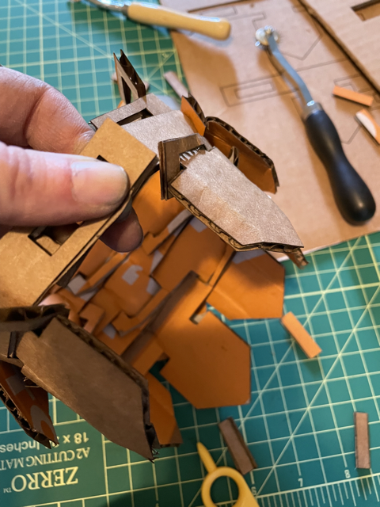
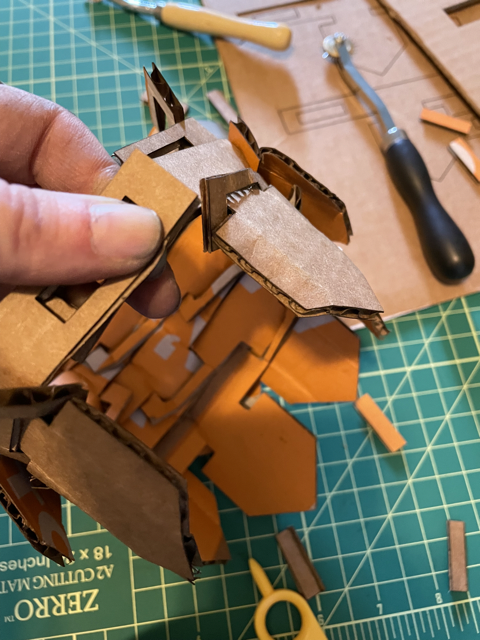

Assignment 2
From the assignment:
Create a parametric model using a grasshopper definition. Using your model, design parts to be laser cut that can be clipped together. At least one of your parts should enable you to connect one of your pieces to another without use of glue or fasteners. Your grasshopper definition should allow you to vary the thickness of your materials, and also vary other design parameters. Include notes in your grasshopper definition so it's clear what a user should input and bake. Laser cut your parts and construct your physical model. Your physical model should contain at least 30 parts. Submit the grasshopper definition, your cut files, and a documentation of your laser cut object.
OutCome: Survives Shaking & 2-30 piece instances!
This image is a photo of the final Grasshopper Definition.
Source Files
Grasshopper file that contains the model Rhino file with a baked tower and piece-with-box Adobe Illustraitor file used for Lightburn Rhino file of one baked geometry (not a surface) Final Lightburn file usedProcess Documentation
Paper Modelling

I wanted to make a dragon, so I found a diy scale on pinterest . It wasn't going to be enough for a whole sheet because it was only the spine, but I modelled it and gleaned some insights.
The next iteration created an interest diagonal scale progression that would allow rows. However, when I assembled it, I realized the hole above the scale needed to be shifted to the left to allow for offset rows like a stereotypical "scale" on a fix or dragon appears.
Rhino and Grasshopper

This started slowly. I wanted to reproduce the project we started in class. I couldn't get it to work in class, so I thought it would be a good challenge to complete.
I spent a considerable amount of time learning how to make a variable pipe. This wasn't necessarily because a variable pipe is difficult. There were new mental models and words I needed to ramp up with. This task helped me explore Grasshopper.

After adjusting the radius of different parameters of the pipe, I settled on this chunkier, marshmallow-peep shape. After completing the box morph, it looks heavily armored. I love it.
I quickly realized, however, that the jutting edges would also need to morph onto the adjacent segments of the peep surface, and given the approaching deadline, I simplified to a cylinder.

At this point, I didn't realize I needed to parametrically create my curve of my replicating piece. I immediately started down what ended up being an 8 hour excusion to figure out how to make this happen.
I finally made it happen, though:)
To the Laser Cutter
Lightburn was much easier this time around.


At first the punching out wasn't easy, though. I had to redo one batch so the laser cut through the whole piece of 2mm cardboard.
10 passes, 65 speed, 100% power ultimately did it. The cardboard had marketing/branding on one side and seemed particularly hard to get through.
Assembly!
After cutting everything out, I followed a simple workflow: perforate, fold inward, line up holes, press through lined up holes, unfold, repeat.
Initially it was flat, but after building up the rows, i was able to connect the ends for a circular basket-without-bottoms (the cylinder!).
 



Grasshopper is an interesting tool. The code helped me even when I was tinkering with settings. The terminology is opaque at first. The material thickness requirement was also a challenge. I think I could still improve on this by considering the edges of the spear folding inward. Even at 2mm, the fold was tight. The gaps on the two arms do expand with thickness, so maybe that would be enough.
Good learning experience.